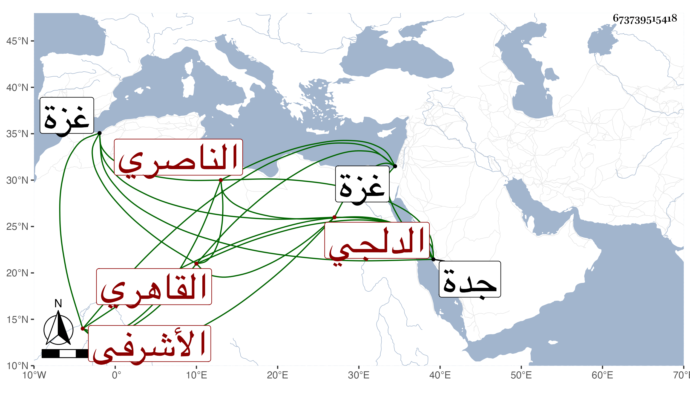

0902Sakhawi.DawLamic.ITO20230111-ara1.EIS1600.673739515418
Biography ID: 673739515418
120
محمد بن محمد الناصري الدلجي الأصل القاهري الأشرفي إينار المهتار . نشأ في خدمة أستاذه حين نيابته بغزة وغيرها وعمل في إمرته ثم في سلطنته مهتار الطشت خاناه وصارت له حركة إلى أن مات في أثناء أيامه في رمضان سقط من سلم الدهيشة فانكسر صلبه ومكث أياما ثم مات وخلفه ولده الأكبر علي الملقب فطيس في الطشت خاناه وتضاخم ثم اشترك معه أخوه محمد وصارا في نوبتين ثم بعد زوال دورتهما بخلع المؤيد واستقرار الظاهر خشقدم صودر علي من الدوادار الكبير جانبك نائب جدة وأخذ أماكنه التي أنشأها بباب الوزير وصارت ليس المكتب ولم يتعرض لأخيه لسياسته بالنسبة لذاك بغير العزل فلزم خدمة خوند زينب الخاصكية في أوقافها وجهاتها بل أوقفت عليه رواقا من جملة بيت البلقيني الذي صار إليها في حارة بهاء الدين حتى مات بعدها في جمادى الثانية سنة اثنتين وتسعين واستمر أخوه بقيد الحياة إلى الآن .
